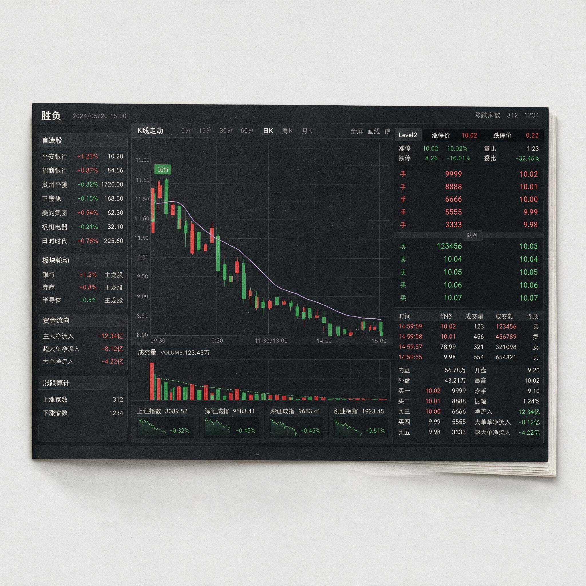

第 11 章
退潮的秩序
一份裁判文书，在它的“本院认为”部分，通常以“经审理查明”的事实为基础，逐条援引法条，最终落在一个不含歧义的判决上。它的力量不在于修辞，而在于它必须给出结论。A股短线交易的退潮期，其内部结构与之类似。
它是一份宣判，不是一场辩论。辩论发生在高潮期——多方与空方在涨停板上激烈博弈，每一笔成交都是针锋相对的陈述。
但退潮期不同。退潮期的盘面语言不再是辩论，而是资金逐一离席的次序。
最先离开的是坐在最外面的听众，他们从未真正靠近过核心，只是被现场的气氛吸引而来。然后是中间排的参与者，他们坐得近一些，但仍在过道边上，随时能起身。
最后，当灯光开始熄灭，连前排的贵宾也必须站起来，整理衣冠，走向出口。这个离席的次序，就是退潮的秩序。
足球赛事引入点球大战，始于1970年。在此之前，淘汰赛阶段打到加时赛结束仍无法分出胜负时，只能通过抽签或重赛决定晋级者。抽签的随机性太大，重赛又消耗巨大，两者都不是令人满意的方案。
点球大战的发明，是在承认一个前提之后做出的选择：当双方在运动战中耗尽所有可能后，必须有一种预设的、结构化的程序来决出胜负。它不依赖运气，不是抽签；它不依赖体能，不是继续奔跑。它是一套规则——五轮互射，轮次固定，次序明确，无人可以临场更改。门将站在门线上，射手站在点球点后，裁判吹哨，射手助跑，射门。这个程序重复五次，或者直到一方在数学上无法追平。整个过程中，没有战术会议，没有临场换人，没有教练在场边嘶吼。点球大战将足球比赛从一项复杂的集体运动，压缩为一种简单的一对一重复博弈。
它不美，但它是必要的终局。A股短线周期的退潮期，与点球大战共享同一套底层逻辑。在一轮行情的高潮阶段，多空双方的力量对比是压倒性的——买盘汹涌，筹码供不应求，龙头股连续涨停，补涨股批量封板，跟风品种水涨船高。这个阶段，空方几乎不存在，不是因为他们看错了，而是因为他们的筹码还没有被释放出来。股价的上涨不是由卖盘决定的，而是由买盘追逐少数愿意卖出的筹码决定的。
高潮期是一种短暂的失衡，天平完全倾向买方。但失衡无法持续。当最后一个愿意在涨停价买入的资金完成交易，天平开始回归均衡。此时，多空双方进入了点球大战式的均势状态：买盘已经耗尽，卖盘尚未释放，价格卡在一个无人愿意主动打破的位置。
这种均势是虚假的，因为它不是双方力量对等形成的均衡，而是双方都无力再主导方向形成的僵局。打破僵局需要一个外部秩序——不是某个利空消息，不是某个政策变化，而是市场微观结构中的流动性收缩机制。这个机制一旦启动，退潮便按预设的次序展开，不受任何个体意志左右。
退潮不是混乱，而是另一种秩序。将退潮等同于“恐慌下跌”或“踩踏出逃”，是一种错误的简化。恐慌是偶发的、无序的、不可预测的。退潮是结构性的、有序的、可被观察的。
它有一套严格的内部结构，一套按“先跟风、后补涨、再龙头”次序逐级坍塌的资金撤离序列。这个次序不是某一次特定行情的产物，而是由流动性在板块内分布的结构决定的。在任何一个板块中，跟风股处于流动性生态的最外围。
它们与核心逻辑的关联最弱，依赖的完全是板块情绪溢出带来的边际买盘。补涨股处于中间层，它们与龙头存在逻辑关联——通常是同行业、同题材或同地域的品种——但它们的上涨理由不是自身具备龙头品质，而是龙头打开了空间后，市场资金向下寻找“性价比”时发现的目标。龙头股处于核心层，它吸纳了最多的流动性，承载了最强的共识，也因此拥有最厚的安全垫——不是基本面安全垫，而是流动性安全垫。
当退潮启动时，流动性收缩的方向是从外向内。最外围的买盘最先消失，因为它们是最后一批进入市场的资金，对板块的忠诚度最低，对风险的敏感度最高。
跟风股的持有者发现自己买入的品种不再有人接盘时，他们开始卖出。这个卖出动作不是恐慌，而是理性计算——他们买入时依赖的是情绪溢出的确定性，当这个确定性消失，卖出的理由便成立了。当跟风股集体破位，补涨股的持有者开始重新评估自己的持仓。
他们买入的逻辑是“龙头不倒，补涨不息”，但此刻他们看到的是，跟风股已经无人接盘，这意味着板块情绪的溢出效应正在从末端断裂。补涨逻辑的第一层支撑——市场仍愿意寻找“同板块低位品种”——已经动摇。此时，补涨股中的敏感资金开始撤离。补涨龙次日闷杀，不是偶然事件，而是这一层逻辑崩塌的必然结果。
最后是龙头股。龙头股最后补跌，不是因为它最弱，恰恰是因为它最强。在退潮期前段，仍有资金愿意在龙头股中博弈，这些资金将龙头股的抗跌解读为“穿越周期”，而非“最后补跌的前奏”。当补涨龙已经闷杀，板块内涨停家数已经萎缩到个位数，龙头的流动性溢价终将耗尽。最后一批买家在跌停板上完成交易，他们买在退潮的终点，不是因为运气差，而是因为他们在退潮的整个过程中，持续用高潮期的经验来解释盘面信号。
退潮的触发，始于一组可观测信号的共振。它不是某个单一指标的突然翻转，而是三个维度同时发出警告。第一个维度，是高位股的分歧转弱。
在高潮期，龙头股也会出现分歧——涨停板打开，放量换手，然后回封。这是健康的换手，是买盘接力卖盘的正常过程。
但退潮期的分歧不同。退潮期的分歧特征是：打开涨停板后，回封的封单金额显著萎缩，且萎缩幅度不是小比例的，而是断崖式的。从连续一字板期间日均数亿元的封单，骤降至数千万元，这是资金不再愿意在高位承接筹码的直接证据。
第二个维度，是板块内涨停家数的连续萎缩。高潮期，一个主线板块的涨停家数可以达到数十家，首板、二板、三板、四板构成完整的梯队。退潮启动时，涨停家数会在一个交易日内从二十余家锐减至个位数，且剩余的涨停股中，首板占比极高，连板梯队出现断层。这意味着，市场不再愿意为板块内的任何品种支付溢价，买盘已经从全面进攻转为点状防御。
第三个维度，是指数情绪的由升转平。具体表现为分时图上的黄白线背离——黄线代表中小盘股，白线代表权重股。
当黄线持续走弱、白线勉强维持时，说明市场中最活跃的投机资金已经开始撤离，而指数仍在权重股的掩护下维持表面上的稳定。这种背离，是退潮最隐蔽的信号，因为它被指数的“平稳”掩盖了。
上述三个条件——高位股封单萎缩、板块涨停家数骤降、指数黄白线背离——的同时满足，构成退潮的触发点。这不是事后归因，它们在盘面上实时呈现，任何交易者都可以观察到。
以2023年8月的一轮中级情绪周期为观察窗口。该周期的主线板块在8月7日达到高潮，当日板块内涨停家数为23家，连板高度达到第7板，低位补涨股批量首板，市场情绪处于“盛极”状态。8月8日，三个触发条件同时出现。第一，高位股分歧转弱——龙头股A在集合竞价阶段仍以涨停价开盘，但封单金额从前一交易日的3.2亿元骤降至不到8000万元。开盘后三分钟内首次打开涨停板，9:33回封，但回封后的封单金额仅维持在1亿元左右，与连续一字板期间日均4亿元以上的封单形成鲜明对比。
这不是简单的“分歧换手”，而是封单力量的断崖式衰退。第二，板块内涨停家数断崖式下跌——9:45时，同板块涨停家数仅为5家，且其中3家为首板，连板股仅剩龙头股A和一只3板补涨股。与前一交易日的23家相比，涨停家数在开盘四十五分钟内萎缩了78%。第三，指数情绪由升转平——当日上证指数分时图显示，黄线在10:00后持续走弱，与白线形成持续背离，黄白线开口在10:30达到0.8%。这意味着中小盘股的情绪已经明显转弱，而权重股仍在勉强维持指数。这三个信号同时出现，构成了退潮的触发点。
在当日盘面上，它们被大多数参与者解读为“强势震荡”。论坛上充斥着将龙头股A的打开涨停板类比为历史案例的帖子，那些案例证明龙头股A在过去五次打开涨停后，均于次日实现反包涨停。但这一判断忽略了一个关键变量：过去五次打开涨停，都发生在高潮期或分歧期，买盘只是暂时性休整，而非结构性衰竭。而8月8日的三个信号共振，指向的是退潮的启动。
退潮一旦启动，便沿着一条可预测的路径展开：从边缘品种向核心品种，按“先跟风、后补涨、再龙头”的次序逐级坍塌。将跟风股B、补涨龙C、龙头股A在8月8日至8月10日三个交易日的分时图叠加，可以观察到资金撤离的精确时间戳。
第一日，8月8日，10:15。跟风股B率先破位。该股在前一交易日以涨停收盘，当日平开后在10:00前维持红盘震荡，成交活跃，表面看属于正常换手。但10:00后，买盘突然消失，卖盘持续涌出，分时图呈现逐级下台阶走势。10:15，股价跌破5日均线，同时成交量放大至前一日同期的三倍。这是退潮的第一枪。
它发出的信号不是“市场恐慌了”，而是“跟风品种的边际买盘已经枯竭”。那些在板块情绪高涨时追入跟风股B的资金，发现无人愿意以更高价格接手他们的筹码。他们开始卖出，不是因为他们听到了坏消息，而是因为他们发现了一个简单的事实：愿意买的人已经没有了。
跟风股B在当日下午封死跌停，全天换手率27%，龙虎榜显示卖方席位全部为短线游资，买方席位则多为散户席位，净卖出金额约3800万元。
第二日，8月9日，9:25。补涨龙C在集合竞价阶段被闷杀。该股在前一交易日仍以涨停收盘，是板块内除龙头股A外唯一存活的连板品种。但在8月9日集合竞价阶段，9:20前尚有资金挂出涨停价买单，9:20后不可撤单时段，这些买单被迅速撤走，取而代之的是持续涌出的卖单。最终集合竞价以跌停价开盘，全天一字跌停，封单金额在收盘时达到1.2亿元。
补涨龙C的闷杀，是退潮扩散路径上的关键节点。补涨股的本质，是龙头情绪的滞后映射。其上涨动力来自龙头股打开空间后，市场对同板块低位品种的流动性溢出。当跟风股已经无人接盘，这种溢出效应便从末端开始断裂。补涨龙C的持有者，面临的不是“错杀”，而是补涨逻辑在退潮秩序中的结构性崩塌——他们买入的品种，在撤离序列中排在第二批被放弃的位置。第三日，8月10日，14:30。龙头股A最后补跌。
在前两日，龙头股A的表现似乎印证了“龙头永不倒”的信念——8月8日放量换手后仍封涨停，8月9日虽低开但盘中拉升至红盘，最终收涨2.3%，成交量放大至历史天量，换手率32%。龙虎榜显示，8月9日，顶级游资席位仍在买入，净买入金额约2100万元，另有两家机构席位合计买入约1500万元。这些买入行为，被市场参与者解读为“龙头不倒，行情不死”。
但8月10日，龙头股A在10:30后开始走弱，买盘在14:00后彻底枯竭，14:30封死跌停板，封单金额在尾盘达到2.7亿元。龙虎榜显示，8月9日买入的顶级游资席位在8月10日全部割肉离场，净卖出金额约2400万元，净亏损约300万元。
这三组时间戳——10:15、次日9:25、第三日14:30——构成退潮扩散路径的精确记录。跟风股率先破位，补涨龙次日闷杀，龙头股最后补跌。这个次序不是偶然的，而是由流动性收缩的物理规律决定的。在退潮期，市场中的买盘并非均匀消失，而是从最外围开始枯竭。
跟风股依赖的是板块情绪溢出的最边缘流动性，当这部分流动性率先撤离，跟风股便成为第一个被放弃的品种。补涨龙依赖的是龙头股打开空间后，市场对补涨逻辑的认可，当跟风股已经无人接盘，补涨逻辑便失去了第一层支撑——市场不再相信同板块低位品种存在上涨的理由。龙头股最后补跌，不是因为它的基本面最差，而是因为它的流动性最好。在退潮期的前段，仍有资金愿意在龙头股中博弈反包，这些资金不是不知道退潮已经开始，而是相信龙头股能够穿越周期。但这种信念的代价是，当退潮进入末端，龙头的流动性溢价也终将耗尽，最后的买家承担了全部跌幅。
退潮期的亏损并非不可规避。规避的前提是承认退潮不是随机波动，而是一个按确定次序展开的流动性撤离过程。在跟风股率先破位时，交易者如果持有的是跟风股，应当执行卖出动作，因为跟风股在退潮扩散路径中排在第一序列。如果持有的是补涨龙，此时应当审视板块内跟风股的整体表现——如果大部分跟风股已经破位，补涨龙的操作逻辑已经松动，持有风险正在上升。
如果持有的是龙头股，此时应当关注板块内涨停家数的变化和补涨品种的走势。当补涨龙开始闷杀时，龙头股的补跌只是一个时间问题。这些动作的前提，是交易者能够识别退潮的三个触发条件，理解退潮的扩散路径，并承认自己持有的品种在这个路径中处于什么位置。
它要求的不是预测能力，而是观察能力和执行纪律。观察跟风股是否破位，观察涨停家数是否萎缩，观察补涨龙是否闷杀。这些信息都在盘面上实时呈现，不需要内幕消息，不需要复杂的模型，只需要一个愿意看见的眼睛。
但交易者往往看不见。不是因为他们没有能力，而是因为他们不愿意看见。
他们宁愿相信龙头股A的日K线图仍在上升通道中，宁愿相信龙虎榜上仍有游资买入，宁愿相信“分歧是买点”的格言。这些信念在退潮期中不再是操作指南，而是遮蔽信号的噪音。在高潮期，交易者学到的是“龙头最后跌”、“分歧是买点”、“首阴可反包”。这些经验在高潮期大概率有效，因为高潮期的秩序是买盘推动，而龙头吸纳了最多的流动性。
但当市场越过某个临界点，秩序本身发生了转换，旧的规律不再适用。退潮期的秩序是卖盘驱动，是流动性从边缘向核心逐级收缩。
在这个新秩序下，“龙头最后跌”仍然成立——但它的含义已经从“龙头会涨回来”变成了“龙头是最后一批被放弃的品种”。交易者将高潮期的阶段经验错当永恒规律，在秩序已经转换的市场中，继续执行旧的动作集。这是退潮期亏损的根源。
一个交易者在退潮期的完整动作序列，明这一过程。在8月8日跟风股B破位时，他持有的正是龙头股A。此时龙头股A仍在涨停，他的账户浮盈约18%。
他看到了跟风股B的跌停，但他将这一信号解读为“杂毛股正常回调”，而非退潮的序曲。他甚至在龙虎榜上看到跟风股B的卖出数据后，得出一个判断：资金在从跟风股撤出，向龙头集中。这个判断在高潮期是正确的，但在退潮期是错误的。
退潮期的资金撤离次序是“先跟风”，但这不是资金主动选择“向龙头集中”，而是跟风股无人接盘后，持有者被迫割肉。所谓的“集中”，只是龙头股尚未开始补跌时的错觉。
8月9日，补涨龙C被闷杀。他持有的龙头股A低开，但盘中拉升至红盘。他将龙头股A的拉升理解为主力护盘，继续持有。
此时他的浮盈已从18%缩水至约8%，但他没有卖出。他告诉自己，龙头股A的走势证明了龙头的抗跌性，这是“龙头信仰”的胜利。8月9日收盘后，他打开股票软件，反复查看龙头股A的K线图，计算如果次日反包涨停，他的盈利将回到多少。他看到了龙虎榜上顶级游资的买入数据，这进一步强化了他的信心。
8月10日，龙头股A在10:30后开始走弱。他盯着分时图，看到股价从红盘逐步翻绿，每次短暂的反弹都被更大的卖单压回。
他的浮盈从8%缩水至2%，跌破成本价，浮盈转为浮亏。在14:00，股价加速下跌，他的浮亏扩大到5%。此时，他做了一个动作：他将手指悬停在“卖出”按钮上，停留了大约三秒钟。
然后，他关掉了股票软件。这个动作不包含任何内心戏。没有他的心理活动描写，没有“贪婪与恐惧的博弈”这类修辞。只是手指悬停，然后关掉软件。
这个动作本身说明了一切：他选择了不面对。他选择了将当下的亏损转化为一个悬而未决的状态——只要不卖出，亏损就是“浮亏”，就是暂时的，就还有可能涨回来。关掉软件，是将这个认知困境从眼前推开的物理动作。但他没有意识到的是，他关掉软件的那一刻，正是龙头股A封死跌停的前三十分钟。
退潮期唯一有效的交易动作是空仓或轻仓等待。这个动作在认知层面最简单的理解，在心理层面最难执行。因为空仓不仅仅意味着不买入，它还意味着对自身此前判断的否定。
如果持有龙头股A的交易者在8月8日跟风股B破位时卖出，他需要承认自己此前“龙头股A将穿越周期”的判断是错误的。如果他在8月9日补涨龙C闷杀时卖出，他需要承认自己将补涨龙C的闷杀解读为“错杀”的判断是错误的。每一次卖出，都意味着承认自己在某个时间点的认知是错误的。而人脑的结构决定了，承认错误带来的痛苦，远大于同等幅度亏损带来的痛苦。
这是行为金融学中“损失厌恶”与“认知失调”的叠加效应：亏损本身是痛苦的，但承认自己的判断错误导致亏损，将痛苦放大了数倍。因此，退潮期的交易者倾向于将卖出动作不断推迟。他们用“龙头信仰”解释龙头股A的暂时抗跌，用“补涨逻辑”解释补涨龙C被闷杀后的“错杀机会”，用“主力洗盘”解释跟风股B破位时的放量下跌。这些解释不是理性的分析，而是心理防御机制的产物。它们的作用是让交易者得以继续持有已进入退潮期的品种，而不必面对“我需要卖出”这个事实。
但退潮的秩序不会因为解释而改变。跟风股B的持有者，在8月8日跌停后，次日继续低开，第三日继续下跌，三个交易日累计跌幅超过25%。补涨龙C的持有者，在8月9日一字跌停后，次日继续跌停，第三日打开跌停但已累计跌幅超过30%。龙头股A的持有者，在8月10日跌停后，次日继续低开，五个交易日内从高点回撤超过20%。
他们中的绝大多数没有在退潮启动时卖出，而是在退潮末端、亏损已扩大到无法承受时，才被迫割肉。
这个割肉的时刻，往往恰好是退潮接近尾声、新一轮周期即将启动的节点。有一种观点值得认真对待。
它认为，龙头战法亏损的主因是执行纪律不严与资金管理失控，情绪周期只是事后归因的叙事装置，任何策略严格执行都能盈利。这个观点包含部分真理：纪律不严和资金管理失控确实是亏损的重要原因。但问题在于，它假设交易者的纪律失效是随机分布在各类市场环境中的。事实并非如此。
交易者的纪律失效高度集中在退潮期。在高潮期，几乎不需要纪律——买入后持有就是最优策略，任何卖出都可能是错误的。在分歧期，纪律的作用较大，但即便纪律执行不严，市场仍可能给予纠错机会。唯独在退潮期，纪律失效的概率最高，且每次失效的代价都极为惨重。
这不是巧合，而是退潮期特有的认知扭曲效应——交易者将高潮期积累的经验固化为策略，在秩序已经转换的市场中继续执行，当盘面信号与策略预期冲突时，他们选择忽略信号而非修正策略。这种选择性忽略，正是“把阶段经验错当永恒规律”的典型表现。
退潮的秩序，本质是流动性的纪律。流动性在高潮期向核心品种集中，在退潮期从边缘品种依次撤离。这个集中与撤离的过程，不是资金的随机选择，而是市场微观结构中的确定性规律。
跟风股最先失去买盘，因为它们与核心逻辑的关联最弱，依赖的完全是情绪溢出的边际流动性。补涨龙接着失去买盘，因为推动它们上涨的不是独立逻辑，而是龙头打开空间后的比价效应，当跟风股已经无人接盘时，比价效应的第一层支撑便已断裂。龙头股最后失去买盘，因为它在整个板块中吸纳了最多的流动性，拥有最厚的缓冲垫。
但缓冲垫不是无限的。当跟风股和补涨龙已经无人问津，龙头股的流动性溢价也会被逐步消耗殆尽。
最后一批买家在龙头股上完成交易，他们买入的不是龙头股的价值，而是自己对“龙头信仰”的忠诚。这份忠诚，在退潮的秩序中，不被奖励。
当交易者看清了退潮的次序——10:15跟风股破位，次日9:25补涨龙闷杀，第三日14:30龙头股补跌——却发现自己仍因“龙头信仰”或“成本心魔”而无法执行空仓纪律时，认知框架的局限性便暴露出来。框架可以告诉你退潮何时开始，扩散路径如何展开，每一个时间节点上什么品种处于危险之中。
但它无法替你按下卖出键。它无法替你关掉股票软件。它无法阻止你在浮亏扩大后重新打开软件，在跌停板上割肉。
这是框架的边界。框架是认知工具，它提供的是对市场状态的判断，而不是对个人行为的强制。当交易者站在框架的边界上，一只脚仍在退潮的秩序之中，另一只脚却已踩进下一轮周期的萌芽，他所面对的，不再是如何识别退潮的启动信号，而是如何在认知与行动之间的鸿沟上，架起一座桥梁。这座桥梁的材料不来自盘面，而来自交易者对自己认知惯性的审视——审视自己是否愿意承认，那些在高潮期被反复验证有效的经验，在退潮期只是一份已经失效的旧地图。
